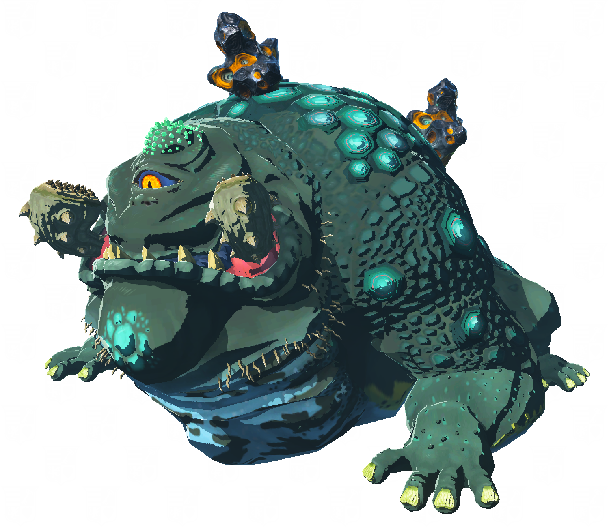
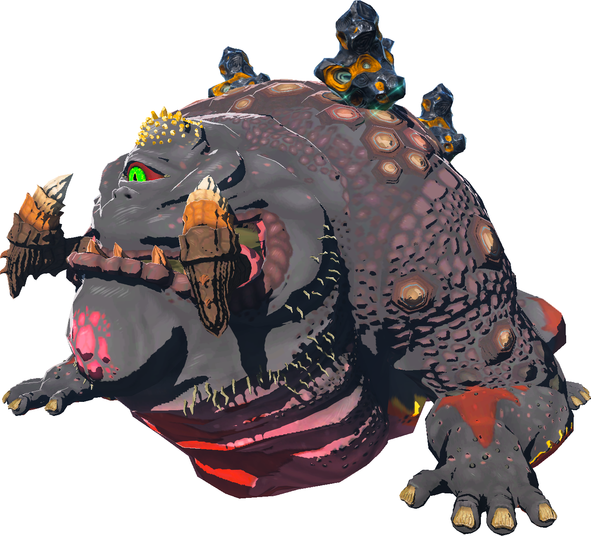
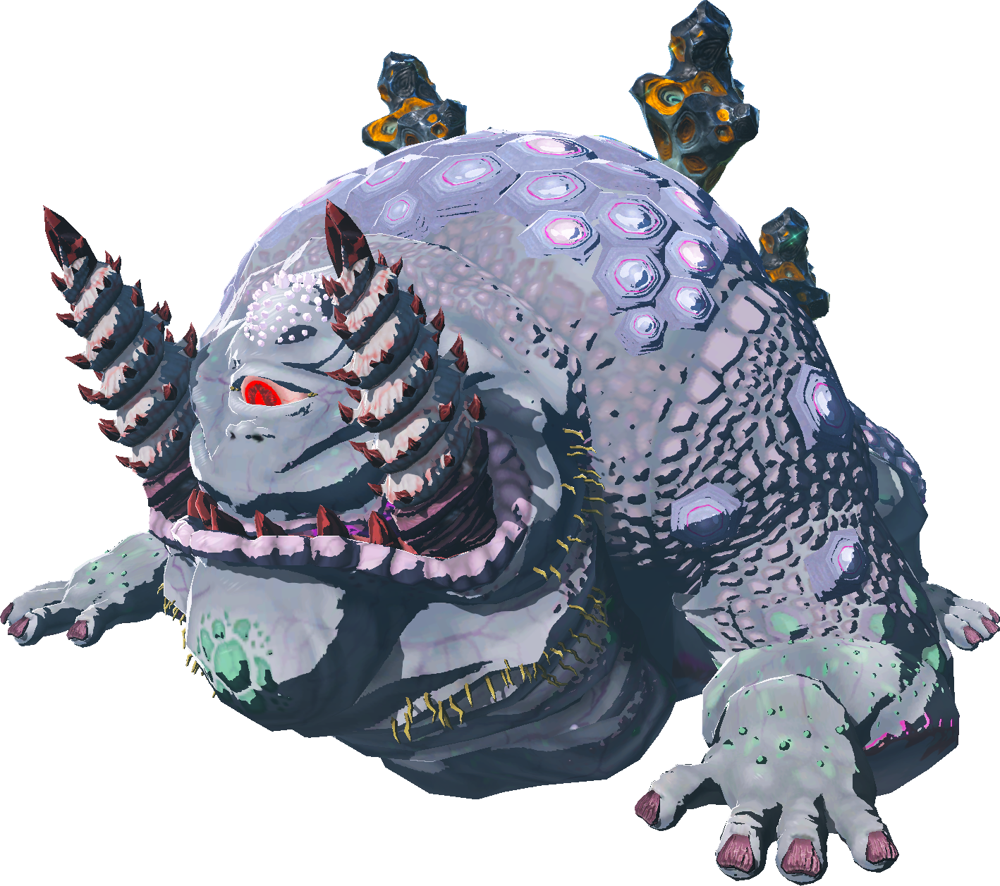
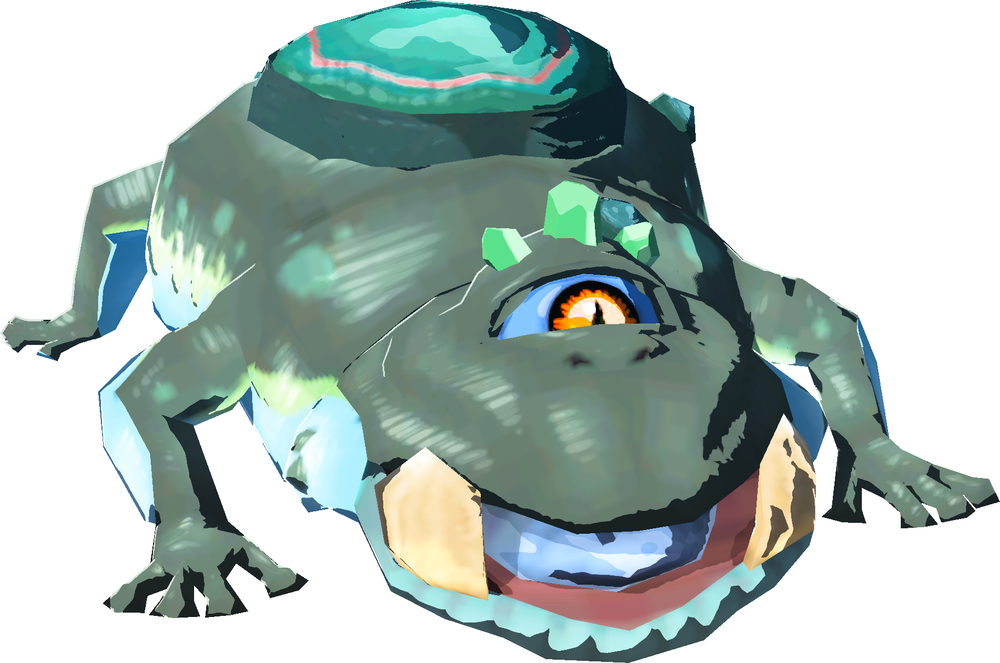

图：游戏内模型图——巨霸迦马，地底的独眼巨蛙，背上驮着一排发光的左纳尼乌姆矿床。
先说结论：地底独眼巨蛙，40 只，三种，眼睛与背矿是弱点
巨霸迦马是地底的独眼巨蛙，体型堪比一座小山，全地底共 40 只，分普通、黑曜石、蓝白三种，血量 700、1350、2100，一种比一种硬。打它就两句：眼睛是开关，背矿是钱包——射中睁开的眼睛它就倒地，爬上背敲碎左纳尼乌姆矿床，矿床的伤害会分摊到它本体上；张嘴吸气时往嘴里扔炸弹花，又是一轮硬直。
打完掉獠牙、指甲与肝脏：獠牙余料合成加攻击，黑曜石与蓝白的獠牙还是深渊套装三、四星的材料；指甲也是深渊套装三星的材料。先完成讨伐队的 6 条大型魔物支线、再打完 40 只，找怪物讨伐队的格拉伦斯领巨霸迦马狩猎奖章。先把结论说清楚：它看着吓人，打法却固定，射眼、爬背、敲矿三步循环，会了就稳。
适合谁：三类玩家最值得下地底找它
- 第一类是刷左纳尼乌姆的玩家：它背上一排矿床，打一只等于挖一圈矿，敲碎的矿床直接掉左纳尼乌姆和大左纳尼乌姆，缺左纳乌能源就去找它。
- 第二类是升深渊套装的玩家：指甲与两种獠牙都是深渊套装三、四星的材料，不打巨霸迦马，深渊套装升不到顶。
- 第三类是奖章与图鉴收集玩家：40 只全清才有狩猎奖章（还得先做完讨伐队的 6 条大型魔物支线），图鉴里巨霸迦马一栏也要靠实打实地打。
反过来，如果你刚下地底、装备还没成型，别急着找蓝白巨霸迦马——血 2100、攻击 58，硬碰硬很吃亏；先从血 700 的普通巨霸迦马练手，把循环打熟了再往上碰。
前置准备：光亮花、向阳草、炸弹花与破岩武器
下地底找巨霸迦马，先把这几样备齐了再去，缺一样都可能白跑一趟：
- 第一是光亮花种子：地底一片漆黑，巨霸迦马趴在暗处很难发现，丢一路光亮花种子照亮一路，远远望见轮廓再动手。
- 第二是向阳草料理：地底到处是瘴气地块，瘴气扣的心只有向阳草料理能回，带几份向阳草煎蛋或者向阳草烤串，别空手下去。
- 第三是炸弹花：喂嘴和破矿两用，多带几朵，十朵起步。
- 第四是破岩武器：锤类武器敲背矿最快，带一把石头余料的大锤，敲矿床比拿剑砍快得多。
- 第五是弓箭与蝙蝠眼球：射眼睛要用弓箭，蝙蝠眼球余料的箭会追踪，眼睛一睁开就射，命中率高得多。
- 第六是精力料理与滑翔伞：地底高低差大，赶路要滑翔，精力不够先吃料理再跳。
提醒一句：地底没有白天黑夜之分，光亮花种子就是你的太阳；另外带一辆滑翔机或者热气球，地底赶路全靠它。
三种巨霸迦马：血量、攻击与掉落总表
三种巨霸迦马除了颜色与血量，掉落的獠牙也不一样，总表如下：
| 种类 | 血量 | 攻击力 | 数量 | 掉落的獠牙 | 獠牙余料加成 |
|---|---|---|---|---|---|
| 巨霸迦马（普通） | 700 | 22 | 12 只 | 巨霸迦马的獠牙 | +14 |
| 黑曜巨霸迦马 | 1350 | 42 | 15 只 | 黑曜巨霸迦马的獠牙 | +24 |
| 蓝白巨霸迦马 | 2100 | 58 | 13 只 | 蓝白巨霸迦马的獠牙 | +35 |
三种都会掉巨霸迦马的指甲与巨霸迦马的肝脏，背上也都驮着左纳尼乌姆矿床。颜色在地底的黑暗里很难分辨，开打前屏幕上方会弹出名字，认名字比认颜色靠谱。三种加起来一共 40 只。

图：游戏内模型图——黑曜巨霸迦马，通体漆黑，血量 1350，是三种里的中间一档。

图：游戏内模型图——蓝白巨霸迦马，蓝白相间，血量 2100，是三种里最硬的一档。
位置总览：40 只怎么找，地面地标对照法
40 只全在地底，地面上见不到。找法就一条：地底与地面地形镜像，对照地面地标定位。地底的矿场、树根与地面上的地名一一对应，认准就近的矿场与树根当路标，再对照地面上的地标找方向。不少巨霸迦马趴在空地上不动，远远就能望见轮廓，丢几颗光亮花种子照亮了再动手。
血月后刷新：打完一只别急着走，血月一来它就刷新回来，刷材料等血月是最稳的办法。下面三节按种类给位置，每种给三处最顺手、最容易找的点。
普通巨霸迦马在哪：中央大废矿与南洛美
普通巨霸迦马 12 只，大多集中在地底中南部，新手练手首选下面三处：
- 中央大废矿南边空地：中央海拉鲁地底，最顺手的一只，从矿场往南走一小段就是它，练手先打它。
- 南洛美地下层一带：地底东南角，两只离得近，顺路可以一起打，打完一只接着打下一只。
- 摩尔迦娜谷采矿场附近：地底东南角的矿场边上，认矿场当路标，绕一圈就能望见它。
提醒一句：普通巨霸迦马血只有 700，装备成型后两轮循环就能放倒，是刷獠牙与左纳尼乌姆最划算的目标。
黑曜巨霸迦马在哪：花柔莉亚与卡拉卡拉
黑曜巨霸迦马 15 只，下面三处最容易找：
- 花柔莉亚谷采矿场西南边空地：从附近的树根一眼就能望见它，离树根最近的一只黑曜石，传送过来就能打。
- 卡拉卡拉废矿南边：矿场往南走一小段，空地上趴着一只，认矿场当路标。
- 格鲁德废矿一带：地底西南角，矿场附近有好几只黑曜石，顺路可以连打。
提醒一句：黑曜石的獠牙余料加 24，是深渊套装三星的材料，缺深渊材料就盯着黑曜石打。
蓝白巨霸迦马在哪：古代地下展望台与海拉鲁城堡
蓝白巨霸迦马 13 只，是三种里分布最散的，下面四处相对好找：
- 古代地下展望台西边：地底东南角，空地上就是它。
- 卡拉卡拉废矿北边：矿场往北走，两只离得不远，可以顺路一起打。
- 海拉鲁城堡东边：近帕帕世之根一带，空地上就是它。
- 海拉鲁城堡西边：城堡西侧的空地上，认城堡当路标。
提醒一句：蓝白血 2100、攻击 58，是三种里最硬的，装备没成型别去碰，先把普通与黑曜石打熟了再来。
打法总流程：射眼、爬背、敲矿三步
打巨霸迦马的循环就三步，学会了三种通用：
1射眼：等它眼睛睁开再射，射中就倒地。眼睛闭着时别浪费箭；蝙蝠眼球余料的箭会追踪，命中率高得多。有的巨霸迦马趴着不动，先手射眼睛能抢先手。
2爬背：它倒地之后爬上背，用锤类武器敲背上的左纳尼乌姆矿床。矿床的伤害会分摊到它本体上，敲矿就是打血，别只砍它身子。
3拉开：它起身后立刻跳下、拉开距离，别贪刀，等它再睁眼或者再张嘴，循环下一轮。
提醒两点：第一，爬背时它一起身立刻跳下，别贪刀，贪刀会被甩下来摔掉血；第二，用钝器以外的武器敲矿效率低，锤类武器是敲矿床的首选，带一把石头余料的大锤再下地底。
被吸进去怎么办：炸弹花与炸弹箭自救
巨霸迦马张开大嘴吸气时，身边东西全往嘴里飞，林克站近了也会被吸进去，一口吞下去掉血不少。应对办法就一句：往它嘴里扔炸弹花或者射炸弹箭。炸弹在嘴里炸开就是硬直，还能打出大伤害；已经被吸住时，同样往它嘴里射炸弹箭自救。
提醒一句：别在它正前方站着发呆，吸气前它会张大嘴，有抬手，看见它张嘴就往旁边跑，或者反手一朵炸弹花扔进嘴里。定时炸弹也行，扔进嘴里等它炸开，效果一样。
跳跃与拍地：两种冲击波怎么躲
巨霸迦马有两种冲击波攻击，都得躲：
- 跳跃砸地：它会高高跃起砸下来，落地一圈冲击波。躲法是跳起来时往侧面跑，别站落点；它跳得比看起来远，别以为跑两步就安全。
- 拍地：离它两只手近了，它会拍地砸出冲击波。躲法是跳起来或者拉开距离，别贴着它的手站着打。
提醒一句：冲击波是贴地扩散的，跳起来能躲开；滑翔伞张开也能飘过去，别硬吃。血月之后它刷新回来，冲击波的节奏不变，熟了就稳。
掉落物全表：獠牙、指甲、肝脏与左纳尼乌姆
打完巨霸迦马掉的东西分两类：身上的材料与背上的矿，掉落全表如下：
| 掉落 | 余料合成加成 | 用途 | 卖价 |
|---|---|---|---|
| 巨霸迦马的獠牙 | +14 | 余料合成加攻击，可碎矿石 | 40 卢比 |
| 黑曜巨霸迦马的獠牙 | +24 | 余料合成加攻击，可碎矿石；深渊套装 ★★★ 材料 | 40 卢比 |
| 蓝白巨霸迦马的獠牙 | +35 | 余料合成加攻击，可碎矿石；深渊套装 ★★★★ 材料 | 40 卢比 |
| 巨霸迦马的指甲 | +10 | 余料合成加攻击；深渊套装 ★★★ 材料（每件 ×3） | 40 卢比 |
| 巨霸迦马的肝脏 | — | 与小动物同烹，炼制药剂 | — |
| 左纳尼乌姆、大左纳尼乌姆 | — | 背上矿床敲碎掉落，造左纳乌能源的原料 | — |
| 大结晶电荷 | — | 打完掉落，拿到水晶精炼处换能量井扩电池；1 个大结晶电荷＝20 个普通结晶电荷 | — |
哈里多说一句：三种獠牙余料合成都能碎矿石，数值越高加攻击越多，蓝白獠牙 +35 是全游戏数得上的高加成余料；指甲别卖，深渊套装三星每件要 3 个，三件一共 9 个，攒着升套装用。
奖章与支线：40 只奖章与未知巨大身影
打巨霸迦马有两样长期奖励：先完成讨伐队的 6 条大型魔物支线——通缉：西诺克斯、通缉：莫尔德拉吉克、通缉：岩石巨人、未知巨大身影、未知天空巨人、未知三头魔物——再打完 40 只不同个体的巨霸迦马，到瞭望台地下避难所找怪物讨伐队的格拉伦斯，领巨霸迦马狩猎奖章。奖章本身不加属性，是全清的证明；奖章计的是 40 只不同个体各打一次，血月后重刷同一只不计入。
另有支线“未知巨大身影”：讨伐队在中央海拉鲁地底（草笛山丘下方）发现巨大身影，打掉那只巨霸迦马回去交差，奖励一枚银卢比。这条支线是认识巨霸迦马的入门——第一次下地底不知道打谁，先接这条支线练手。
小迦马：顺带一提的地底小怪
地底还有小号的：小迦马，血只有 16，体型小一圈，顺手一刀就清。别把它和大只的搞混：小只的不掉獠牙，奖章也不算它，遇见了顺手清掉就行，不用专门找。

图：游戏内模型图——小迦马，血只有 16，体型小一圈，顺手一刀就清。
翻车点：九件容易翻车的事
- 地底没光摸黑撞上：光亮花种子不带够，撞上巨霸迦马才发现，先手就没了。
- 瘴气地块站着打：瘴气扣的心只有向阳草料理能回，没带向阳草料理别在瘴气地块上站着打。
- 眼睛闭着浪费箭：眼睛闭着时射箭没用，等它睁开再射，蝙蝠眼球余料的箭命中率更高。
- 爬背贪刀被甩下来：它一起身立刻跳下，别贪刀，贪刀会被甩下来摔掉血。
- 被吸时往外跑：被吸住应该往它嘴里扔炸弹花或者射炸弹箭，往外跑是跑不掉的。
- 站落点吃跳跃冲击波：它跳起来时往侧面跑，别站落点，跳得比看起来远。
- 用钝器以外的武器敲矿：锤类武器敲矿床最快，拿剑砍矿床效率低得多。
- 以为打完一只就完事：血月后刷新，奖章要 40 只全清、还得先做完讨伐队的 6 条大型魔物支线，别想一天清完。
- 没带向阳草料理，心被瘴气扣空：地底到处是瘴气，向阳草料理是必带的，别空手下去。
哈里的取舍：先打普通刷材料，蓝白留到最后
先打哪种？先打普通：血 700 最软，练熟射眼、爬背、敲矿的循环；再打黑曜石：獠牙 +24 是深渊三星的材料，缺深渊材料就盯着黑曜石打；蓝白最后：血 2100、攻击 58，装备成型再去，别开局就去碰。
刷什么？缺左纳尼乌姆打普通就行，背上一排矿床，打一只等于挖一圈矿；缺深渊材料再碰黑曜石与蓝白；奖章是长期活，别想一天清完 40 只，每天顺路打两三只，几周就清完了。最后提醒一句：巨霸迦马是地底最划算的 Boss——眼睛是开关，背矿是钱包，循环打熟了，一只就是一包左纳尼乌姆加一根獠牙。
一句话总结
巨霸迦马是地底最划算的 Boss：眼睛是开关，背矿是钱包，射眼倒地、爬背敲矿、张嘴喂炸弹，三步循环打完收獠牙与左纳尼乌姆；先完成 6 条大型魔物支线、40 只全清，再找格拉伦斯领奖章。